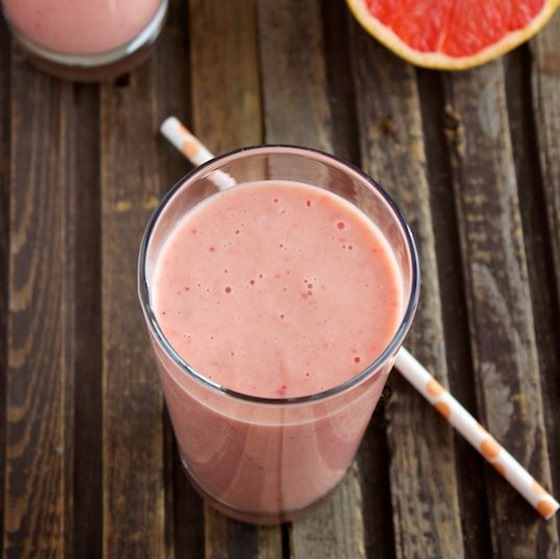
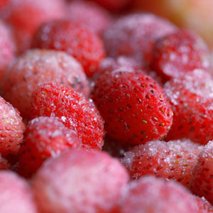
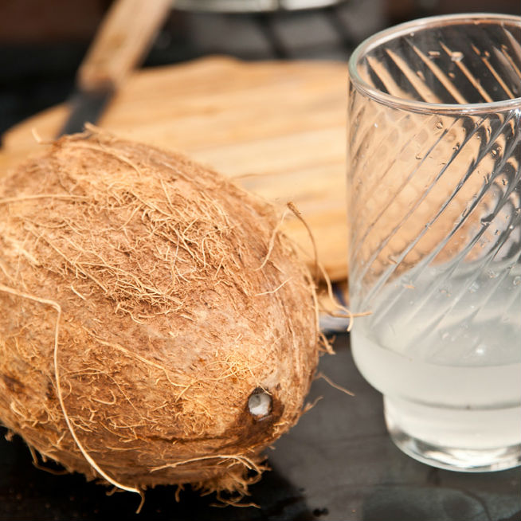

Smoothie de coco y frutos rojos
- 
- 
- 
Ingredientes
- 350 ml de agua de coco
- 1 taza de frutillas congeladas
- ½ taza de blueberries congeladas
- ¼ taza agua
- Azúcar/stevia a gusto
Elaboración
- Licuar las frutillas, agua de coco, leche y miel o azúcar al gusto hasta que todo esté bien incorporado.
- Endulzar al gusto si es necesario y agregar más agua si no lo quieren tan espeso.
Notas
Si decides usar fruta que no esté congelada agrega hielos hasta lograr la consistencia deseada.